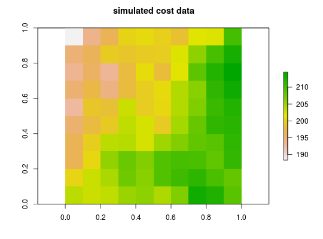

This function generates cost layers using random field models. By default, it returns spatially autocorrelated integer values.
simulate_cost(x, n = 1, model = RandomFields::RPpoisson(RandomFields::RMtruncsupport(radius = raster::xres(x) * 10, RandomFields::RMgauss())), transform = identity, ...)
| x |
|
|---|---|
| n |
|
| model |
|
| transform |
|
| ... | additional arguments passed to
|
RasterStack-class object.
# create raster r <- raster(ncol=10, nrow=10, xmn=0, xmx=1, ymn=0, ymx=1) values(r) <- 1 # simulate data cost <- simulate_cost(r) # plot simulated species plot(cost, main = "simulated cost data")